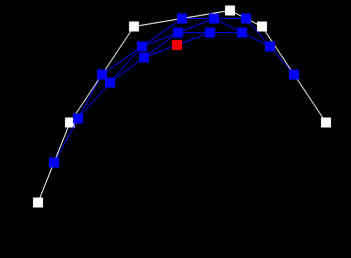
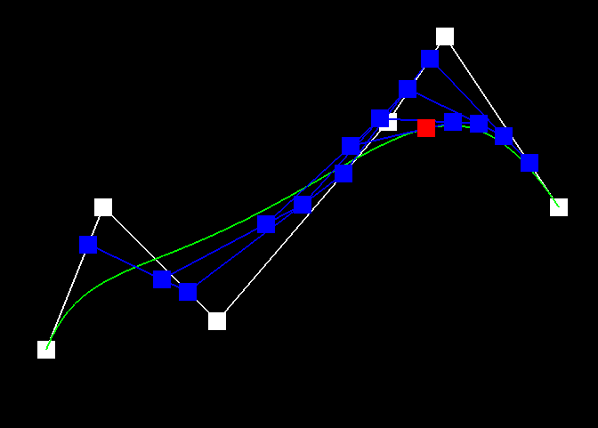
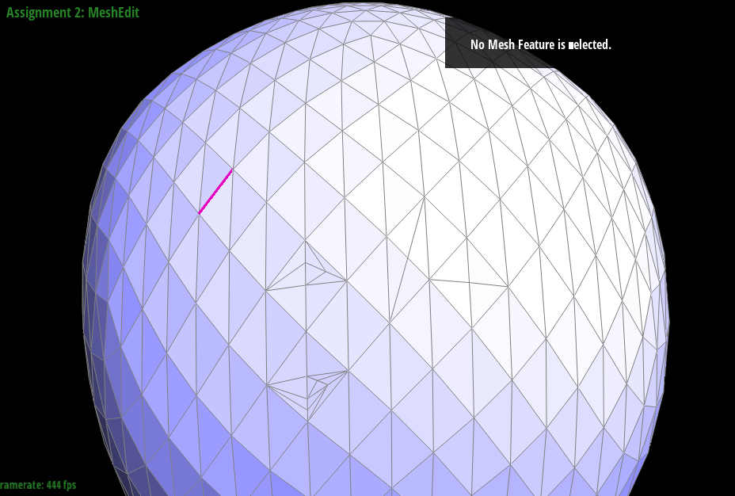
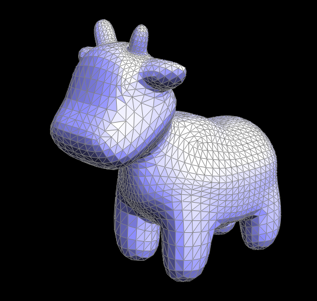
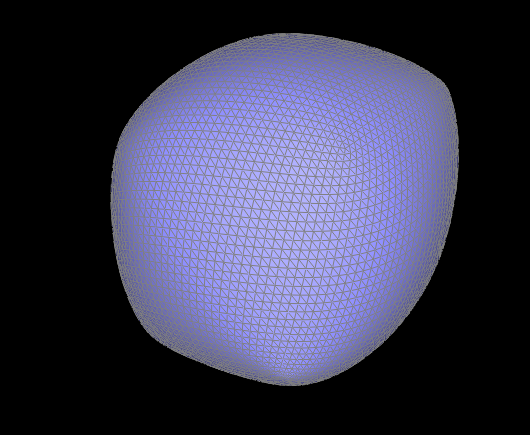

CS 184 Assignment 2
Jason Wang
Write-Up: Part 1
- Casteljau’s algorithm is used to interpolate a curve from a set of line segments. This algorithm takes a set of N line segments and a ratio parameter between 0 and 1 to produce a set of (N-1) line segments. The algorithm is recursively applied until there is a single line segment where a point along that line segment relative to the distance ratio is returned. Evaluating this algorithm from 0 to 1 produces a set of points that map a curve. I implemented this algorithm by iterating through each point at index i and (i+1) with distance ratio t and adding that point to a vector of interpolated points.




Write-Up: Part 2
- Casteljau’s algorithm works almost identically in higher dimensions as it does in 2D. For a N-dimensional curve, (N-1) scalar interpolation parameters are required. To map a 3d surface, for example, a bezier curve is interpolated along one axis for each step along the other axis. This set of points is then used to interpolate the curve in the other axis to produce a set of points that map the final surface. I implemented this algorithm by extending my 2d step algorithm to the 3rd dimension as well as creating a 1D function that recursively applies the stepping function until a single point is returned along an arbitrary axis given a scaling parameter. This 1D function is then iteratively used to produce smooth curves along one axis of the control points. The 1D algorithm is then applied again to these smooth curves along the other axis to finally create a set of points that map the target surface.

Writeup: Part 3
- To Implement area-weighted vertex normals, I iterated through the triangles meshes around a given vertex and summed their area. I calculated the area of each triangle mesh by taking half of the cross product of 2 of the edges. I then returned the normalized sum.
Writeup: Part 4
- I first enumerated and named all the half-edges, vertices, edges, and faces so they would be easier to read and code with. Drawing out the edge flip on paper with labels made the process extremely easy as it was clear to see what to remap the half-edge pointers to. Surprisingly, my edge flip worked on the first try so there was no debugging process.

For Your Writeup: Part 5
- Using the same naming convention from the last part, I first enumerated and named all the existing mesh objects. I then created all the new objects that I would need for the split and reassigned all the pointers after that. I had some issues where holes would appear when I split an edge. Hovering over the meshedit.exe program, I could see that the edges and half edges were working properly, so I guessed that the issue was with misassigned faces, which turned out to be the problem.


Writeup: Part 6
- I implemented loop subdivision by first updating the vertex positions of the input mesh by the weighted average of the neighboring vertices. I then implemented 4-1 subdivision by splitting every original edge in the mesh, using the function from the previous parts. After splitting the edges, I iterated through all the newly created edges and flipped them if they connected an original and newly created vertex. For testing, I started out rendering the cube as it was the most simple and had the most predictable subdivision. I tested my solution by comparing my result to manually inputted instructions on the cube to see which part of my algorithm was buggy.
For meshes with a high polygon count, sharp corners and edges did not really change much. It was only meshes with a low polygon count that had their corners smoothed out. For the cube, its sharp corners are smoothed out because the new vertex positions are an average of the surrounding vertices. In addition, after subdividing the cube multiple times, the result is asymmetrical. This is because vertices on the cube that had a higher degree were flattened out more than those that had less edges connected to them. I fixed this issue by subdividing the edges on the face of the cube so that all the corner vertices were the same degree.

